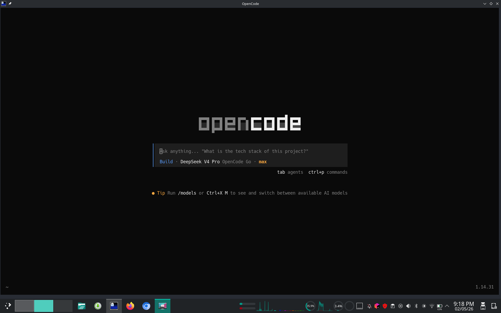
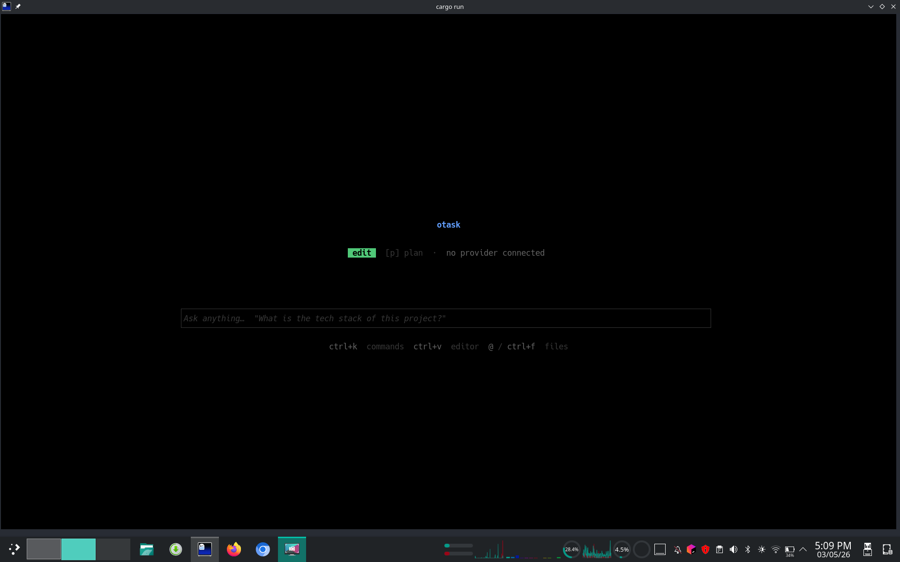
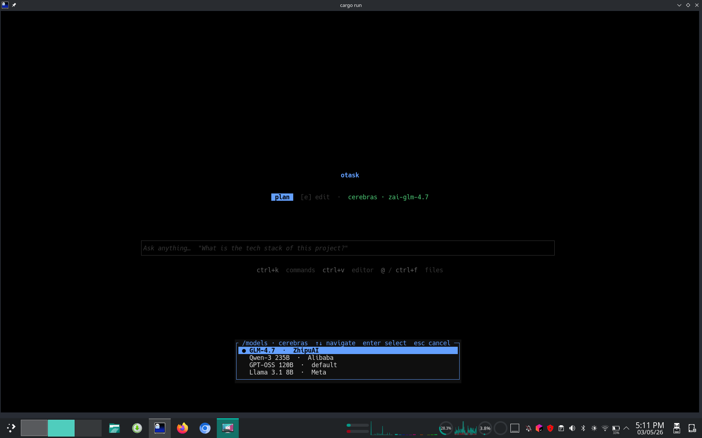
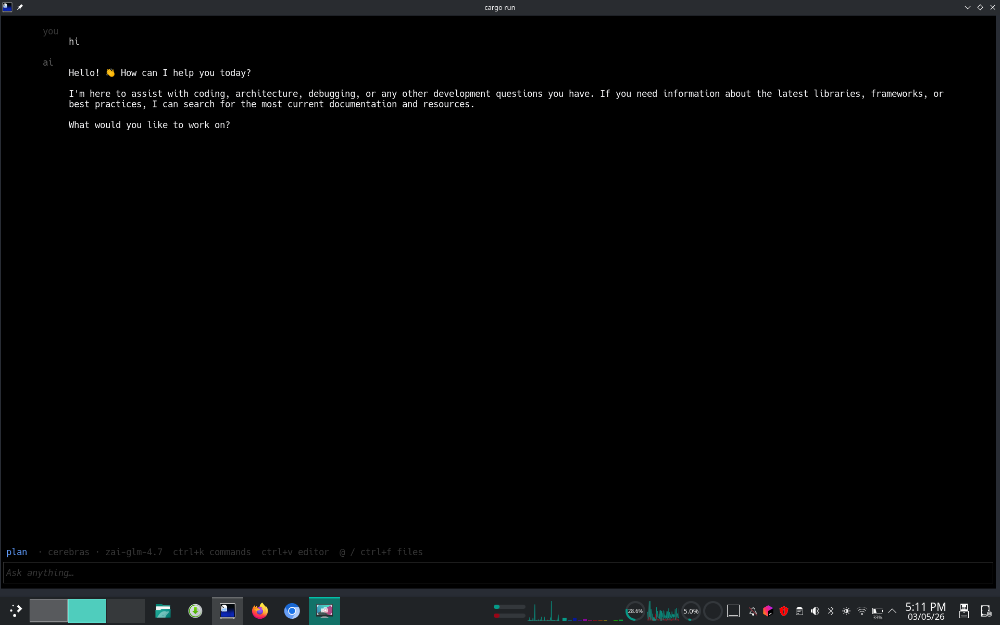
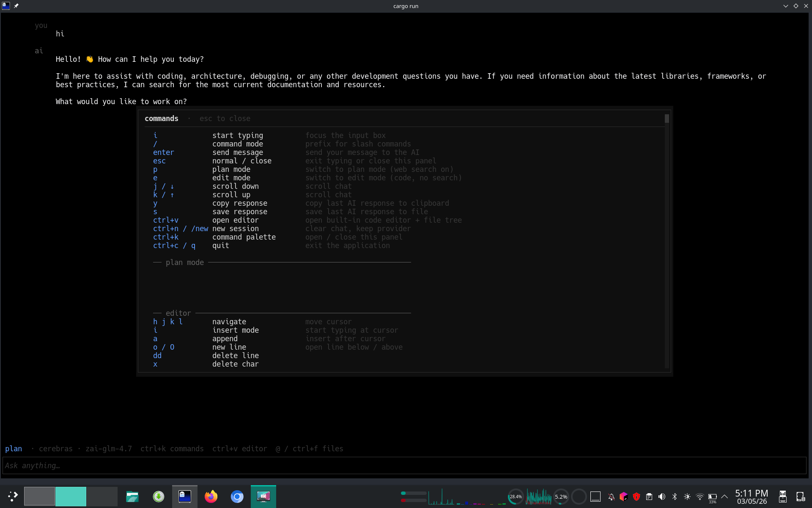
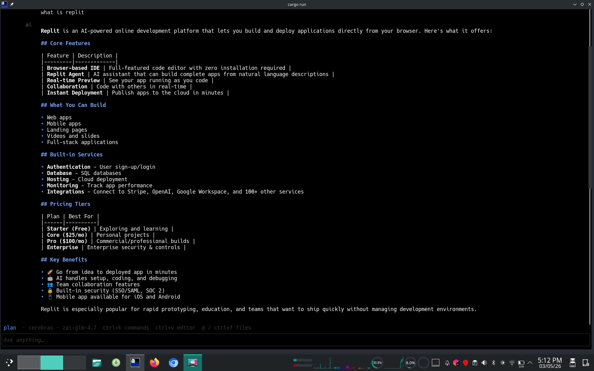
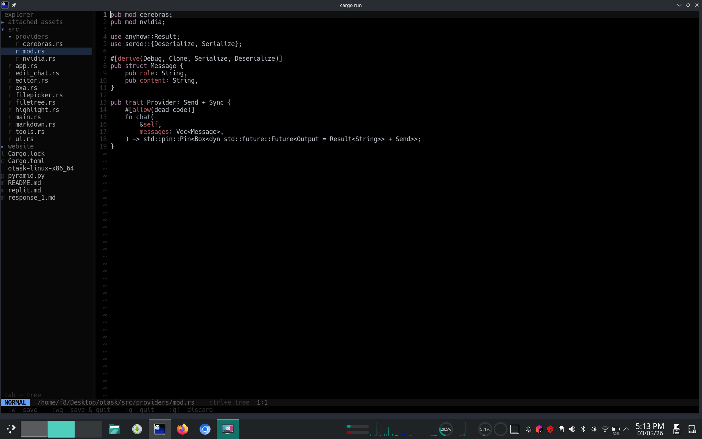

otask is a blazing-fast TUI coding assistant built in Rust. Plan with real-time web search. Edit files with precision tool-calling. Attach files with @-mentions. Switch between Cerebras and NVIDIA providers on the fly. Full vim-style editor, file tree explorer, and markdown rendering — all without leaving your terminal.
Switch seamlessly between planning with live web context and pure focused coding — no clutter, no noise.
Switch between Cerebras for blazing speed and NVIDIA for free endpoints — at runtime with a single command.
Plan mode automatically searches the web for current docs, library versions, and best practices via Exa's fast search API. Up to 3 rounds per response.
Plan modeRuns on Cerebras — the world's fastest AI inference. Up to 3 000 tokens/second with gpt-oss-120b for near-instant responses.
~3 000 t/sConnect to NVIDIA's free inference endpoints. GLM-4.7 with interleaved thinking, Llama 3.1/3.3, and Mistral 7B — all free.
Free tierSwitch between Cerebras and NVIDIA at runtime with /connect. No restart needed. Change providers and models on the fly.
RuntimeInteractive model selection overlay with /models. Navigate with j/k, select with Enter. Dynamically shows models for your active provider.
/modelsType @ in the input to open a fuzzy file picker. Scan your project, filter files, and attach their contents to your message with one keypress.
Ctrl+FAttach files, directories, or images to your prompts. Content is injected with clear delimiters so the AI has full context.
Any fileOpen any file with Ctrl+V. Full vim keybindings — normal, insert, command modes. Save with :w, quit with :q. Dirty tracking with [+] indicator.
Ctrl+VNavigate your project with a sidebar file tree. Toggle with Ctrl+E, switch focus with Tab. Expand/collapse dirs, open files with Enter.
Ctrl+ECode in the editor is highlighted via syntect — 100+ languages, accurate grammar-based tokenisation with base16-ocean dark theme, zero flicker.
100+ langsAI responses render headings, bold, code blocks, lists, tables with box-drawing borders, blockquotes, links, and strikethrough — right in the terminal.
Full tablesPress y to yank the last AI response to your clipboard, or s to save it as a markdown file. Fallback to file save if clipboard unavailable.
y / sPress Ctrl+K at any time to open a searchable command palette with every keybinding, slash command, and action listed in organized sections.
Ctrl+KEdit mode uses read_file, create_file, and edit_file tools. Up to 10 read → edit → verify cycles. Auto-creates parent directories.
Edit modeNVIDIA's GLM-4.7 model supports interleaved thinking with enable_thinking and clear_thinking flags for deeper reasoning.
Built with Ratatui + Crossterm + Tokio. Minimal binary, zero heap bloat, instant startup — no Electron, no Node, no Python.
Ratatui + TokioReal terminal sessions showing plan mode, edit mode, the vim editor, file tree, and more.







Type / in the input to start a command. Every command is reachable from the chat.
Connect to the Cerebras provider. Enables Plan mode (with web search tool-calling) and Edit mode (with file tool-calling). Supports gpt-oss-120b, qwen-3-235b, llama3.1-8b, and zai-glm-4.7.
Connect to the NVIDIA provider. Free endpoints available. Supports GLM-4.7 (with interleaved thinking), Llama 3.1 8B, Llama 3.3 70B, and Mistral 7B.
Open the interactive model picker overlay. Shows models for your active provider. Navigate with j/k, select with Enter, cancel with Esc.
Set or update your Exa AI API key at runtime. Enables real-time web search in Plan mode.
Open a specific file in the built-in vim-style editor. Supports syntax highlighting, line numbers, and dirty tracking.
Open the file-open prompt. Type a relative path to any file in your project to open it in the editor.
Start a new session. Clears the chat history but keeps your current provider connection and API keys.
Shows a hint to press Ctrl+K to open the full command palette with every keybinding and command listed.
Every action is reachable without a mouse. The full reference lives in Ctrl+K.
Download a pre-built binary with curl, or build from source with Cargo.
INSTALL
curl -fsSL https://github.com/f-ei8ht/otask/releases/latest/download/otask-linux-x86_64 -o otask && chmod +x otask && sudo mv otask /usr/local/bin/
RUN
otask
otask
/connect cerebras YOUR_CEREBRAS_KEY p # switch to plan mode i # start typing What should I use for async Rust in 2025?
/exa YOUR_EXA_API_KEY
git clone https://github.com/saifcore7/otask && cd otask cargo build --release ./target/release/otask